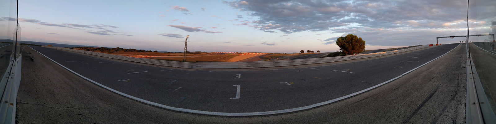

Lédenon avril 2018 - Coupe de France Promosport 1000cc

Qualification
Je pars en qualification le samedi en même temps que Vincent. Je rentre dans la voie des stands au bout de quelques tours pour contrôler la pression des pneus. Je repars tranquillement pour mon tour de lancement. Dans le virage du pont, je perds l'avant sans comprendre pourquoi. La moto glisse, se retourne puis s'arrête contre le mur de pneus. Je cours la relever. Mais un demi guidon est cassé ce qui m'empêche de repartir. Je suis déçu car je pouvais améliorer mon chrono actuel.
La moto est ramenée en camion et je débute une longue session de mécanique avec l'aide de Pierrot, Patrick et Guillaume. Je démonte les tubes de fourche pour les faire contrôler par Pierre. Je change les 2 demi guidons ainsi que les bracelets. Cardi me prête une bulle, puis on fini par réamorcer l'huile du moteur. La mécanique est enfin terminée et il est déjà l'heure de partir en course.
Demi finale
Je suis sur la grille de départ à côté de Vincent en 32ème position. Je prends un départ correct. On se bagarre bien et les dépassements sont nombreux. C'est une bonne course et on rentre avec la banane. Je termine 29ème avec un meilleur tour en 1'33"140.

Consolante
Il pleut lors la consolante où les 6 premiers pilotes sont repêchés pour la finale. Le circuit est très piégeux et dès le tour de chauffe plusieurs pilotes chutent.
Je gagne quelques places au départ. Je manque plusieurs fois de tomber. Les sensations sur l'angle sont bizarres. Il est difficile de ressentir l'adhérence des pneus dans ces conditions. J'arrive à augmenter le rythme pour gagner encore quelques places. À quelques tours de la fin mon poursuivant est loin. Je péfère donc assurer ces derniers tours et limiter ce weekend à une seule chute. Je termine 6ème et donc je suis qualifié pour la finale :-)
Finale
Je pars de la dernière position sur la grille étant le dernier repêché. On se souhaite bonne courses avec les amis en pré-grille. J'arrive à gagner 2 places au premier tour. Mais mon rythme n'est pas assez rapide et je reperds ces positions. Je n'arrive pas à accrocher le groupe devant et je finis dernier de la finale. Ce n'est pas grave, puisque c'est déjà un bon résultat de se qualifier en finale.
Crédits photos Étienne Maurin.